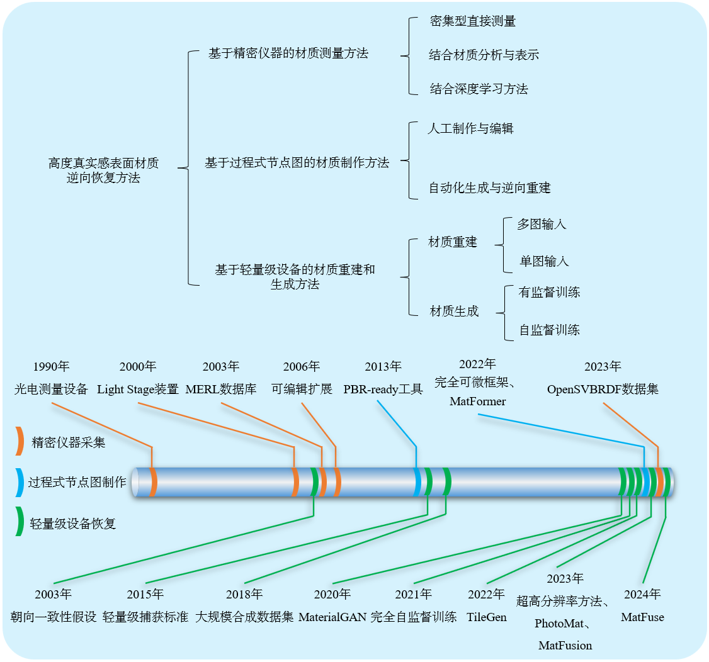
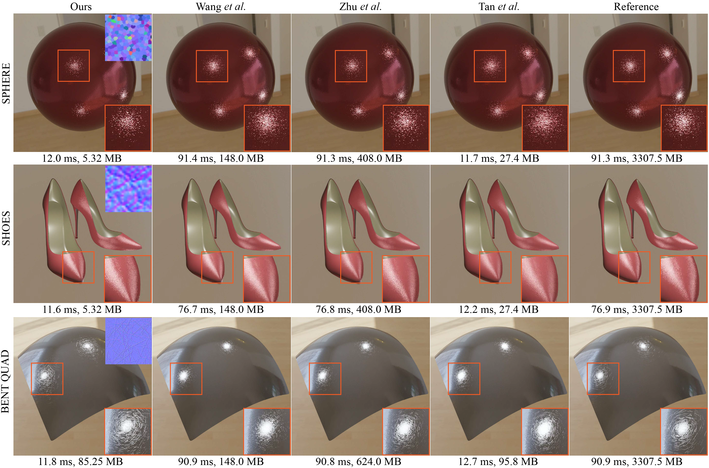
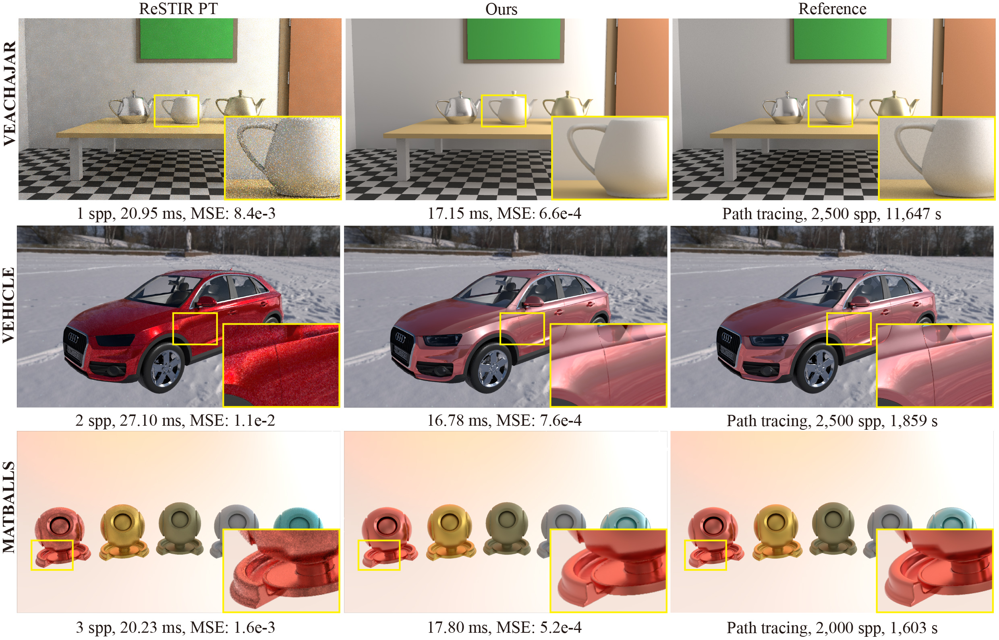

Youxin Xing
 CV
CV
youxinxing@mail.sdu.edu.cn
I am a PhD candidate in the Rendering Group at Shandong University, supervised by Prof. Lu Wang and Prof. Beibei Wang remotely.
Interested in computer graphics, especially in real-time rendering and materials, now, I am working on material inverse with deep learning methods. My goal is to find a better way to approximate the material appearance as accurately as possible. Exploring the real world and representing it in the virtual world is enjoyable for me.
-

A Survey of Inverse Recovery Methods of Highly Realistic Surface Materials JCAD&CG, 2025[PDF] [Paper Page]
-

A Tiny Example-Based Procedural Model for Real-Time Glinty Appearance Rendering CVM, 2024 (JCST)[PDF] [Paper Page]
-

Real-time All-frequency Global Illumination with Radiance Caching CVM, 2023 (CVMJ)[PDF] [Paper Page]
I enjoy listening to music and doing some reading in my spare time. Delicious food is my special pursuit. O(∩_∩)O